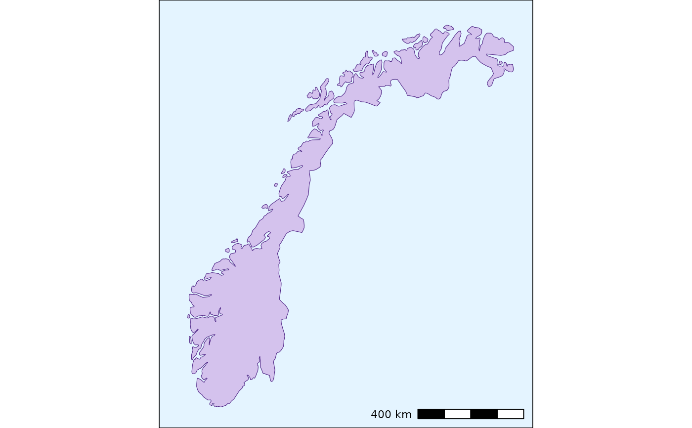

draw(): Draw maps with ggplot2 functions and sf objects.
It is based on previous versions of the
Map
Drawing Script for R, offering a consolidated method of creating maps with
a uniform style.
Usage
draw(
area_data,
area_col,
area_fill,
other_areas_data = NULL,
other_areas_col = NULL,
other_areas_fill = NULL,
subdivision_data = NULL,
subdivision_colfill = NULL,
subdivision_col_values = NULL,
subdivision_fill_values = NULL,
subdivision_legend_order = 2,
font = "",
size = 12,
coordinates = NULL,
coord_size = 4,
coord_shape = 21,
coord_colfill = coordinates$Type,
coord_col = "darkred",
coord_fillcol = "red",
label_repel = FALSE,
label_repel_x = coordinates$Longitude,
label_repel_y = coordinates$Latitude,
label_repel_label = coordinates$Place,
label_size = size/ggplot2::.pt,
coord_sf = TRUE,
coord_sf_xlim = c(2.5, 32.5),
coord_sf_ylim = c(57.3, 72),
coord_sf_expand = FALSE,
coord_legend_order = 1,
annotation_scale = TRUE,
as_location = "br",
as_width_hint = 0.3,
as_text_family = font,
margin_t = 0,
margin_r = 0,
margin_b = 0,
margin_l = 0,
margin_unit = "mm",
panel_background = "#E4F4FF",
output_filename = NULL,
output_device = ragg::agg_png,
output_width = 5.68,
output_height = 6.5,
output_resolution = 1200,
attribution = NULL,
attribution_size_factor = 0.5,
attribution_colour = "#636363"
)Arguments
- area_data
An
sfobject to be drawn withggplot2- area_col
An optional string for the object's
colourargument- area_fill
An optional string for the object's
fillargument- other_areas_data
An optional
sfobject to be drawn withggplot2, default isNULL- other_areas_col
An optional string for the object's
colourargument, default isNULL- other_areas_fill
An optional string for the object's
fillargument, default isNULL- subdivision_data
An optional
sfobject to be drawn withggplot2, default isNULL- subdivision_colfill
An optional vector of strings for the object's
colourandfillarguments, default isNULL- subdivision_col_values
An optional vector of strings for the object's
colourargument, default isNULL- subdivision_fill_values
An optional vector of strings for the object's
fillargument, default isNULL- subdivision_legend_order
An optional integer for specifying the object's order in the legend, default is
2- font
An optional argument for specifying the font family, default is
""- size
An optional argument for specifying the font size, default is
12- coordinates
An optional vector with object to be drawn with
ggplot2, default isNULL- coord_size
An optional integer for specifying the coordinate object's size, default is
4- coord_shape
An optional integer for specifying the coordinate object's shape, default is
21- coord_colfill
An optional argument for specifying the
coordinatescolumn to be passed ascolourargument, default iscoordinates$Type- coord_col
An optional string for the object's
colourargument, default is"darkred"- coord_fillcol
An optional string for the object's
fillargument, default is"red"- label_repel
An optional logical argument for specifying whether to add a
ggrepelrepel label, default isFALSE- label_repel_x
An optional argument for specifying the
coordinatescolumn to be passed asxargument, default iscoordinates$Longitude- label_repel_y
An optional argument for specifying the
coordinatescolumn to be passed asyargument, default is `coordinates$Latitude`- label_repel_label
An optional argument for specifying the
coordinatescolumn to be passed aslabelargument, default iscoordinates$Place- label_size
An optional argument for specifying the label size, default is
size / ggplot2::.pt. This is due to the conversion that happens forgeom_textobjects- coord_sf
An optional logical argument for specifying whether to use
coord_sf, default isTRUE- coord_sf_xlim
An optional vector of integers for specifying the x-axis limits, default is
c(2.5, 32.5), which works fine for Norway- coord_sf_ylim
An optional vector of integers for specifying the y-axis limits, default is
c(57.3, 72), which works fine for Norway- coord_sf_expand
An optional logical argument for specifying whether to expand the
coord_sfobject, default isFALSE- coord_legend_order
An optional integer for specifying the coordinate object's order in the legend, default is
1- annotation_scale
An optional logical argument for specifying whether to add a
ggspatialannotation scale, default isTRUE- as_location
An optional argument for specifying the location of the annotation scale, default is
"br"- as_width_hint
An optional argument for specifying the width hint of the annotation scale, default is
0.3- as_text_family
An optional argument for specifying the font family of the annotation scale, default is
font- margin_t
An optional integer for specifying the legend.box.margin top margin, default is
0- margin_r
An optional integer for specifying the legend.box.margin right margin, default is
0- margin_b
An optional integer for specifying the legend.box.margin bottom margin, default is
0- margin_l
An optional integer for specifying the legend.box.margin left margin, default is
0- margin_unit
An optional string for specifying the legend.box.margin unit, default is
"mm"- panel_background
An optional string for specifying the panel background colour, default is
"#E4F4FF"- output_filename
An optional string for specifying the output filename, default is
NULL. If it is not null, the function will save the plot as a file- output_device
An optional function for specifying the output device, default is
ragg::agg_png- output_width
An optional integer for specifying the output width, default is
5.68, which works fine for Norway- output_height
An optional integer for specifying the output height, default is
6.50, which works fine for Norway- output_resolution
An optional integer for specifying the output resolution, default is
1200DPI- attribution
An optional string for specifying any data source or copyright information, default is
NULL- attribution_size_factor
An optional integer for specifying the size factor to be applied to the font size of the attribution text, default is
0.5- attribution_colour
An optional string for specifying the colour of the attribution text, default is
"#636363"(a shade of dark grey)
Examples
norway <- load_maps_data(countries = "Norway")
draw(area_data = norway,
area_col = "#512888",
area_fill = "#D4C2ED")
#> Scale on map varies by more than 10%, scale bar may be inaccurate
